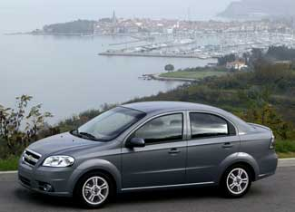

General Motors (GM) announced on June 3 its plans to cease production at four GM truck assembly plants in North America, while adding additional shifts at two assembly plants for cars. According to Rick Wagoner, GM's chairman and chief executive officer, consumer preferences are shifting permanently away from trucks and sport utility vehicles (SUVs) in favor of smaller cars and crossover vehicles.
As a result, GM saw significant increases in the retail sales of its Chevrolet Malibu, Chevrolet Aveo and Pontiac Vibe in May, while its May sales of trucks to its dealerships are down by 36.7 percent from last year. Regarding cars and crossovers, "Our challenge in May was having enough vehicles available to sell," Wagoner said. But he also noted that "higher gasoline prices are changing consumer behavior, and rapidly ... significantly affecting the U.S. auto industry sales mix. We at GM don't think this is a spike or temporary shift; we believe that it is, by and large, permanent." See the GM sales figures for May and the speech Wagoner gave on June 3.
GM is also taking a number of longer-term, strategic actions to address high gasoline prices and the shift in consumer preferences, including the formal approval of the GM board of directors for the production of the Chevrolet Volt, a plug-in hybrid electric vehicle. GM intends to unveil a production version of the Volt "in the very near future," with a goal of delivering the vehicle to Chevrolet showrooms by the end of 2010.
The GM board also approved a next-generation Chevy compact car for U.S. and global markets, as well as the next generation version of the Chevy Aveo, both of which will launch in 2010. GM will also start producing its 1.4-liter, turbocharged four-cylinder engine in the United States for use in the new Chevy compact car.
GM is also "undertaking a strategic review" of the Hummer brand and could either revamp the product line or sell the brand. The company also announced on June 6 that it will offer a flex-fuel version of the 2009 Cadillac Escalade, allowing the vehicle to be fueled with E85, a blend of 85 percent ethanol and 15 percent gasoline.
Of course, GM's sales trends are not unique to the company; all the large automakers are seeing similar trends. Ford, for instance, saw a 20 percent increase in retail sales of its cars in May (compared to last year) and a 4 increase increase in car sales to its dealerships. Meanwhile, its SUV sales to dealerships were down 44 percent and its truck and van sales to dealerships were down 29 percent (note that both Ford and GM did not release retail sales information on their trucks and SUVs).
Toyota also saw big sales gains for its Yaris, Corolla and Scion xB, although Toyota's car sales overall were down by 21.3 percent in May, compared to last year. Toyota's light truck sales are down by 15.9 percent, while Toyota's Lexus division suffered sales drops nearly across the board. Likewise, Honda experienced a 30.7 percent increase in car sales in May, compared to last year, while its truck sales were down 11.4 percent and sales in its Acura division were down by 9.9 percent.
|
 GENERAL MOTORS The 2009 Chevrolet Aveo is rated at 25 mpg in city driving, 34 mpg in highway driving. |
|
|